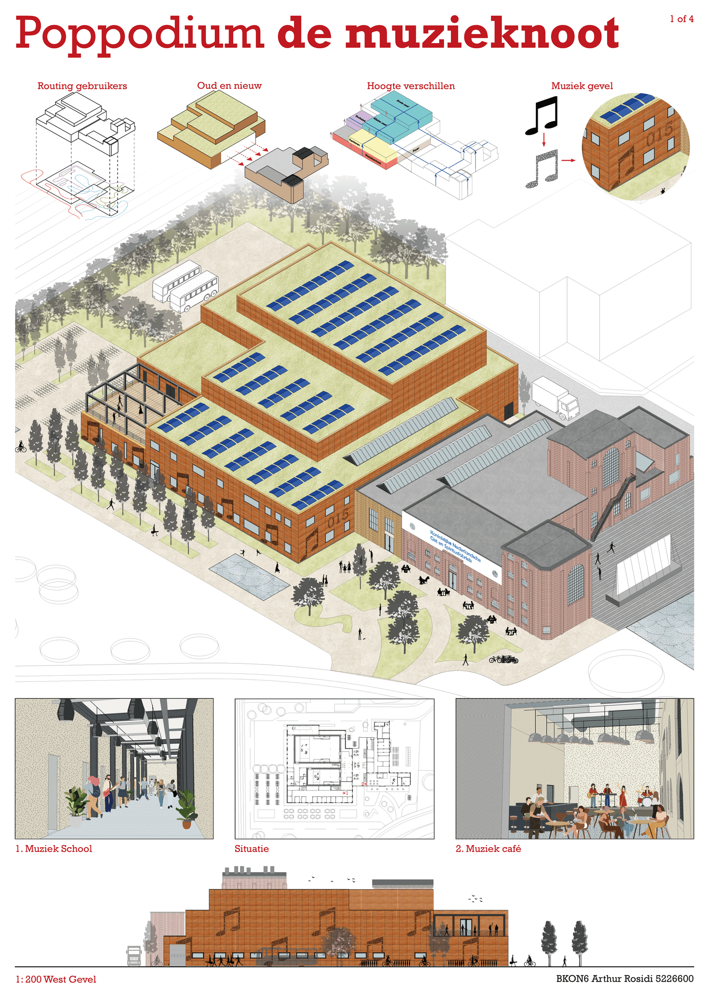
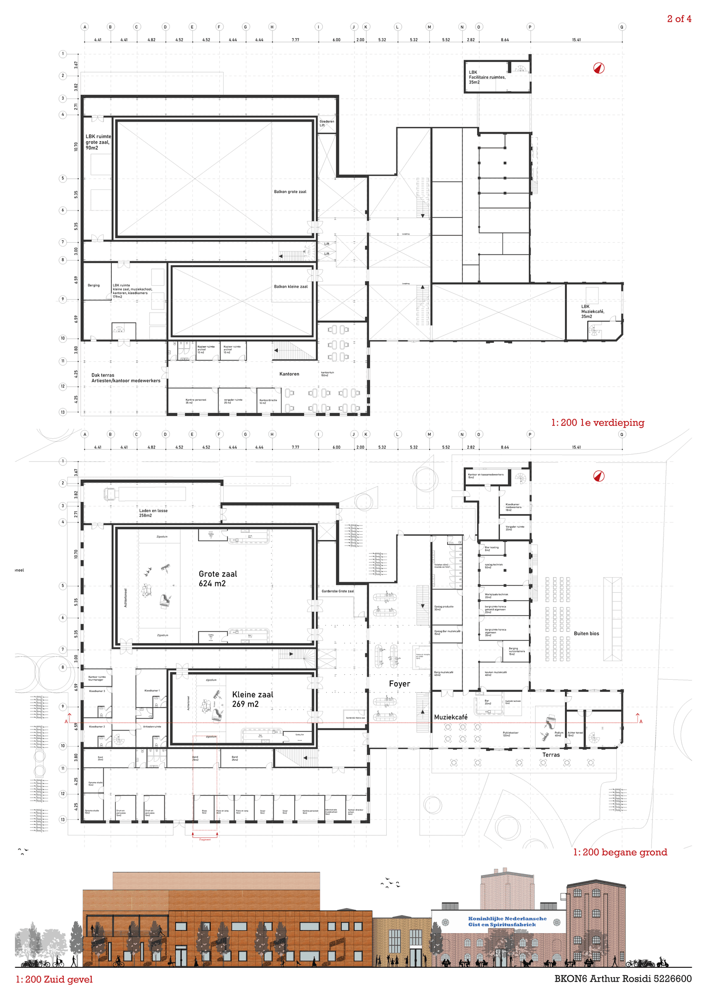
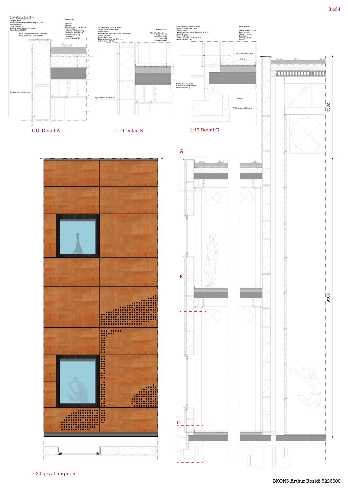
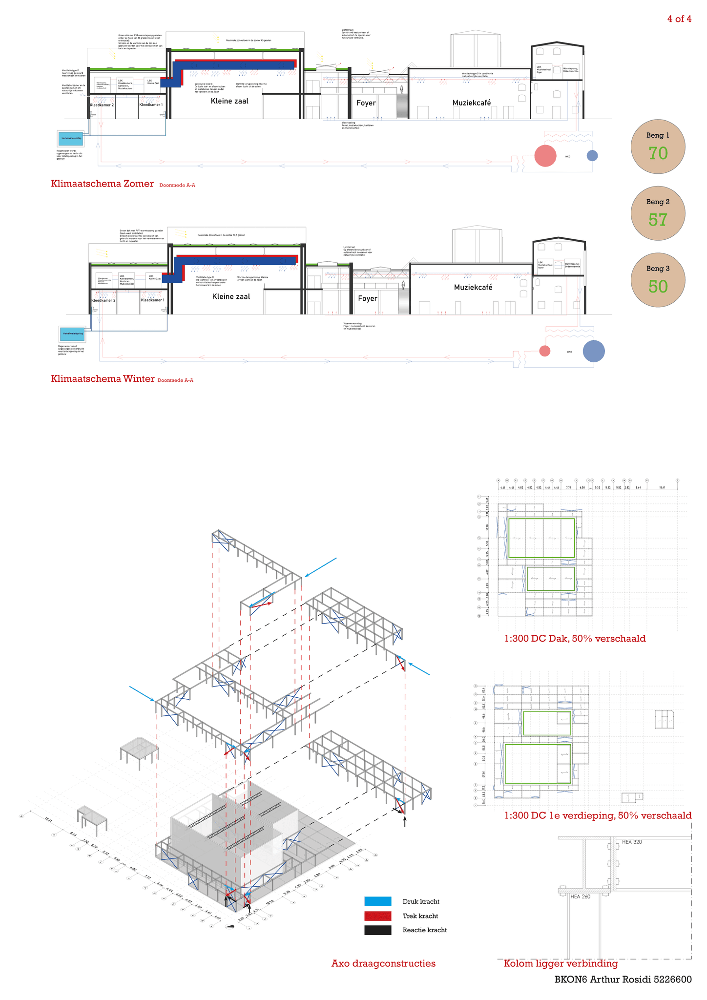

De Muzieknoot is my individual capstone design for the BK6ON6 module, the final bachelor project in which I developed a complete integrated design: architecture, structure and climate design all in one hand. The assignment was a new pop venue for the city of Delft on the former DSM Gist site, where the existing industrial monument, the Tapgebouw, had to be incorporated into the design.
In De Muzieknoot I connect the new volume to the Tapgebouw and use the height differences between the large hall, the small hall, the foyer and the music school to bring the routing of the different user groups, from performers to visitors to students, together in a logical way. The façade is clad in corten steel with a perforation pattern derived from a music note, so the building shows from the outside what it’s about.
For the climate design I chose a green roof with PVT panels, connected to a heat pump with aquifer thermal storage and heat recovery ventilation, combined with rainwater reuse. This results in strong BENG scores. The structure is a steel portal frame with trusses to span the large halls, which I verified through compression and tension force calculations.
Tools/Approach:
Rhinoceros, Adobe InDesign, Adobe Illustrator, Model making, Site visit
Poster



